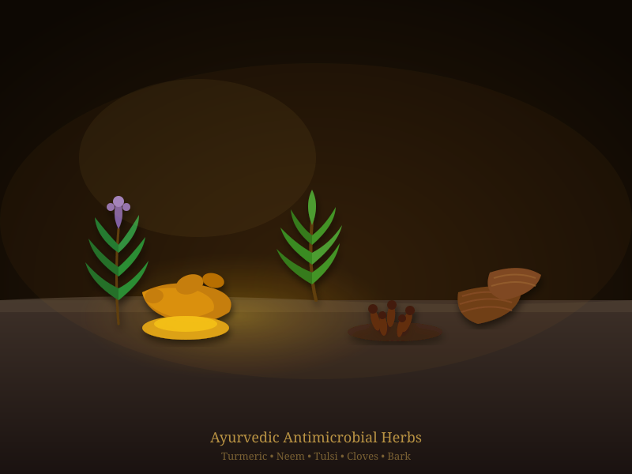

The Concept of Krimi (Pathogens)
The ancient Indians heavily investigated the microscopic world when diagnosing diseases. In the Atharvaveda, written millennia ago, there are precise descriptions of terms like Krimi and Rakshasa, which refer to unseen, disease-producing agents.
The sage Sushruta, known as the "Father of Surgery," in his treatise Sushruta Samhita, recognized that certain diseases move from person to person through physical contact, shared eating, or even via the air—a direct recognition of infectious microbes.


Sterilization and Phytochemicals
Beyond identifying pathogens, Ayurvedic medicine proposed sophisticated sterilization methods (Fumigation or Dhupana) utilizing antimicrobial barks and resins.
They heavily integrated naturally microbial-resistant elements into daily life. Neem (Azadirachta indica), turmeric (Curcuma longa), and tulsi (Ocimum sanctum) were scientifically applied for their broad-spectrum antibacterial and antifungal properties.